Gastroscopy
From
Cotton
& Williams - Practical Gastrointestinal Endoscopy.
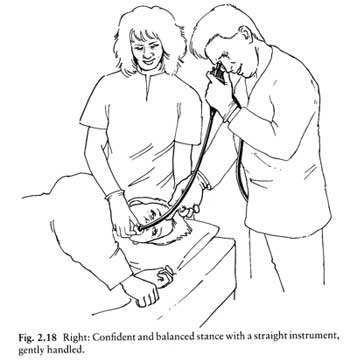
Golden rules
1. Do not advance without vision.
2. If in doubt, withdraw.
Preparation
Use pharyngeal anaesthesia
- don't ask them to say ahh, or the larynx will be exposed.
- can drink within 30mins of use.
Halve midazolam use for elderly (>70yrs)
- or hepatic / pulmonary impairment
- conversely need large doses for alcohol / benzo tolerant people.
If distress is prohibitive during proceduce, analgesia (pethidine /
fentanyl) is possibly better than
more midaz
Positioning
1. Head and neck in longitudinal axis
2. Left lateral, head on a pillow.
3. Head tilted forward,mouth down to allow safe dribbling.
4. Nurse at head, holding mouthguard, pts head and arms.
Passing
the scope
Steer down under direct vision.
- rehearse up angle
- pass over tongue, keeping view on CCTV
- if view lost or teeth seen, start again.
- twisting the shaft can help keep central.
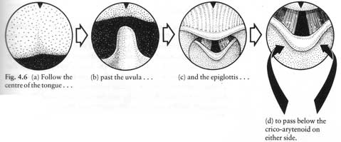
Gagging can be reduced by requesting deep breathing
- suppressing retch reflex
Normal tonic cricopharyngeal spasm limits view down oesophagus.
- angle down, passing inferior to crico-arytenoid cartilage
- go to one side of the midline
- 'red-out' occurs.
- insufflate air, and keep up gentle pressure.
- should slip into the oesophagus in a few seconds.
If necessary, ask pt to swallow
- they can't, physically, but may get a brief view as they try.
Keep watch, as semi-blind insertion slides past mucosa
- here is risk of diverticulum entry.
Finger-guidance
Less than desirable (bites possible)
- put 2nd & 3rd fingers over back of tongue
- guide scope down midline of pharynx.
- ask pt to swallow as fingers withdrawn
Use as a back-up.
Routine Survey
1. Advance directly to duodenum
- only partially inflate stomach, to avoid difficulty passing greater
curve.
- take care & observe; scope trauma and suction can cause mucosal
lesions thus diagnostic confusion.
2. Observe duodenum
3. Examine stomach
- look at all four walls sequentially by tip deflection, rotation and
advance/withdrawl.
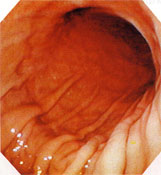
Landmarks and Handy Tips
1. Cricothyroid
2. Indentation of L main bronchus
3. Pulsation of LA and aorta
4. OGJ
- pale pink to darker red gastric
- usually at 38-40, have pt sniff or breathe deeply
- usually gastric mucosa >1cm above OGJ
- the irregular 'z-line' junction.
- hiatus hernia if >2cm above hiatus; in any case, oesophagitis is
more relevant.
5. Cardia
- distal oesophagus usually angles a little L here.
- rotate somewhat counter-clockwise, inflate, and withdraw the tip
slightly.
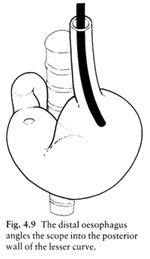
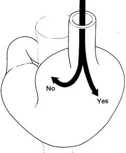
- if you rotate right rather than left, the scope with retroflex and
you will get lost.
6. Incisura of stomach
- must increasingly angle up, and rotate clockwise, following folds as
advancing through stomach.
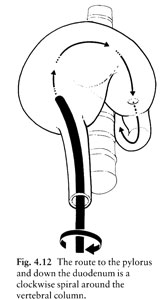
7. Pylorus
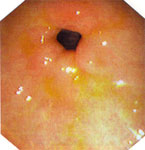
- need to control all dials with left hand to get good at this.
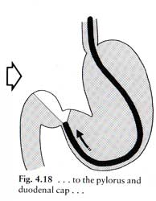
- as it is passed, the greater curve loop inevitably straightens
- accelerating your tip against the distal bulb
- disimpact (insufflate) and view
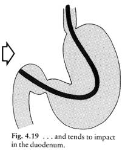
8. D2
- take care with this maneuvre.
- rotate scope 90o to right
- angle tip to right and acutely up to corkscrew around bend
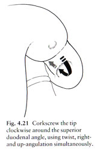
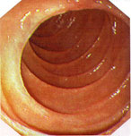
9. Further Duodenum
- paradoxically often better to withdraw
- this straightens stomach loop.
- forceful pushing simply forms a larger loop.
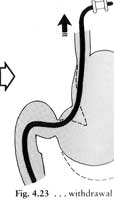
10. Retroversion
- to view cardia and proximal stomach.
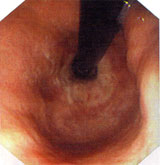
FAQs
What is the risk of complications?
- less than 1:1000
- main factors are experience, competence and correct sedation dose.
What is the risk of over-inflation?
- most sedated pts can
belch
- in GA, keep abdo exposed and an eye on over-distension.
How do I prevent perforation?
- don't overinflate, an existing lesion may be vulnerable.
- usually incompetence +/- imprudent force is at fault.
- more common during blind intubation
- cardia and superior duodenal angle vulnerable when lesions present.
There is excessive residue in the
stomach.
- most pts obey the protocol: do they have outlet obstruction?
- only keep going if benefit outweighs aspiration risk.
How many biopsies should I take from
a lesion?
- a few
Gastroscopy or rigid oesophagoscopy
for a FB?
- objects at or above cricopharyngeus are best removed by ENT surgeons.
- the pt will probably be unable to tolerate the obstruction very well
at all.
Steak is impacted in the
oesophagus. Push or pull?
- no urgency if the pt is not distressed & can swallow; glucagon
0.5mg iv may help them pass it.
- if fresh, may be able to pull it.
- meat fragments in a few hours, break it up with a snare and push it.
- be careful, there might be a bone.
- your task is not complete until you determine a cause.
They swallowed a true foreign body -
will it pass?
- the cricopharyngeus is the narrowest point of the GI tract, so
probably.
- if wider than 2cm / longer than 5cm, best to remove it.
- if sharp / pointed, 15-20% chance of perf - remove it.
- a button battery is an urgent situation; there are very good
guidelines at toxinz website.
- don't remove condoms stuffed with drugs, better to do it surgically,
wouldn't want to kill the smuggler with an overdose, would we.
Any advice for gastric polypectomy?
- can bleed, usual to inject base with adrenaline prior to removal.
The stomach looks thick and abnormal,
but my biopsy is normal.
- can use a loop snare diathermy for biopsy.
- move back and forth over stomach wall to make sure it is mobile and
thus submucosal.
- prescribe losec, you have just made an ulcer.
Where do I best biopsy for coeliac's
disease?
- as reliable in D2 as jejunum.
- mucosa may appear pale, oedematous and without normal villi.
- take good specs beyond papilla of Vater.
The pt has an upper GI haemorrhage
due to a varix.
- do the basics (+/- SSB tube) and go get help.
How do I treat a peptic ulcer that is
bleeding?
- see the card on GI bleeding first.
- cautious sedation, GA protects the airway better.
- major bleeding is rarely from the greater curve so standard L lateral
position.
- treat the feeder before the bleeder; jabbing the vessel may cause
uncontrollable bleeding.
- ie rim around the vessel with injections.
- use adrenaline 1:10,000 dilution in 0.2-0.5ml aliquots around the
base to a total of up to 10ml.
- surgery probably better with large posterior wall duodenal ulcers;
gastroduodenal artery possibly involved.